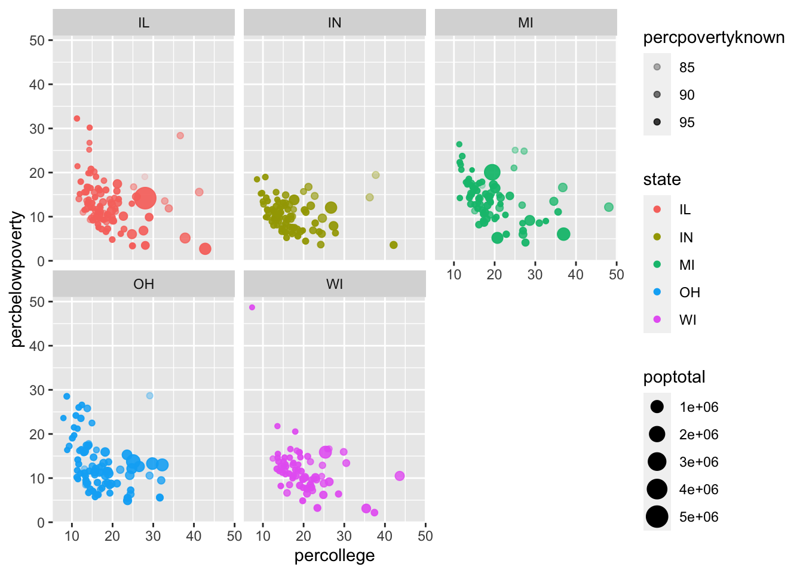
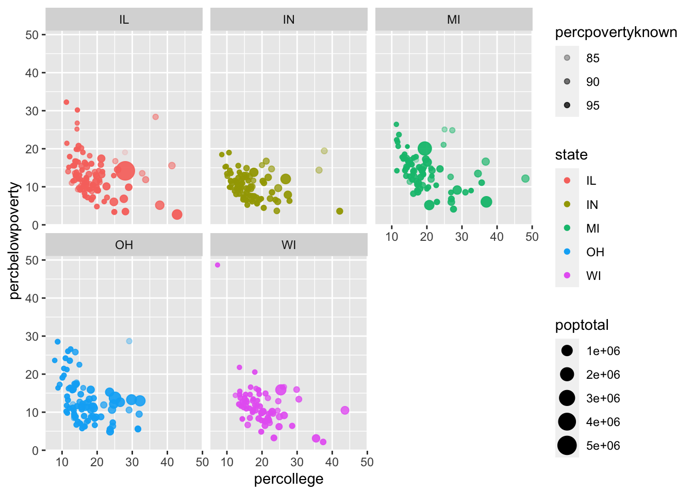
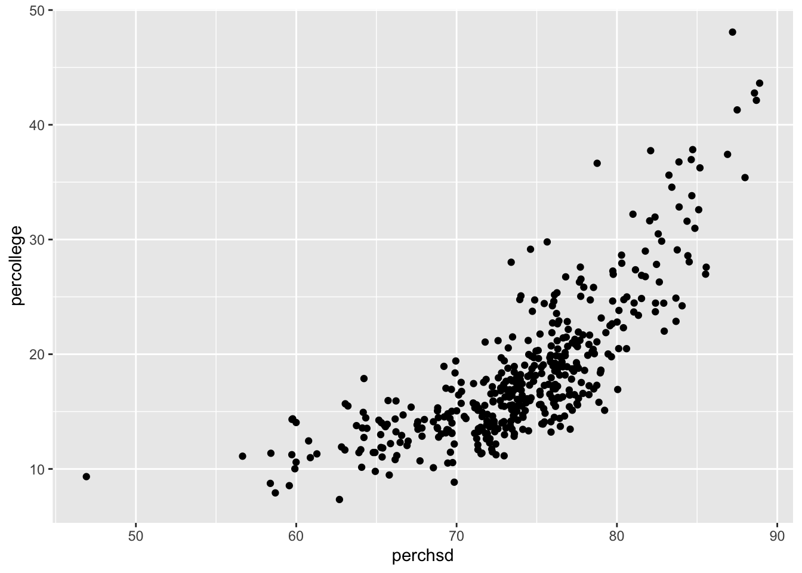
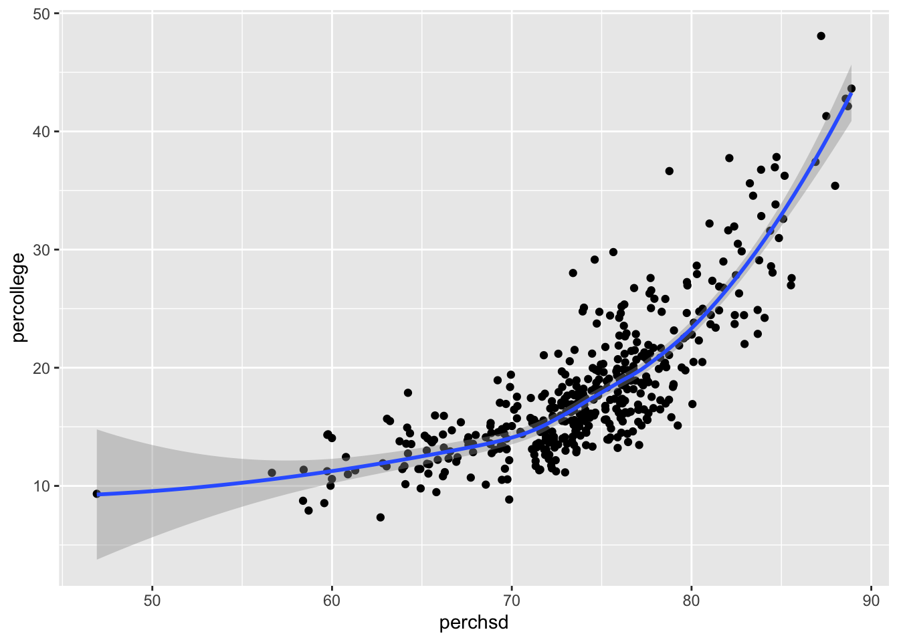
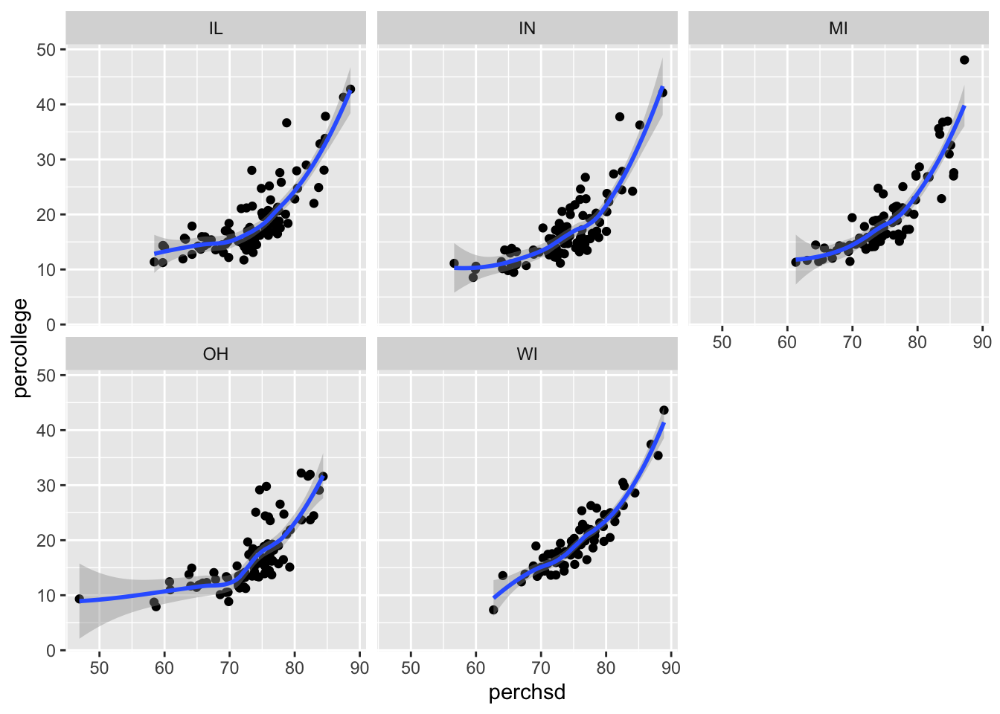
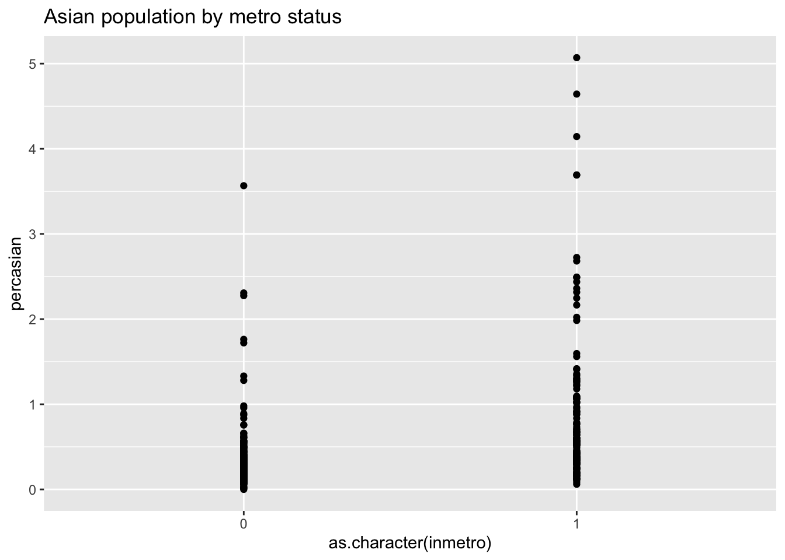
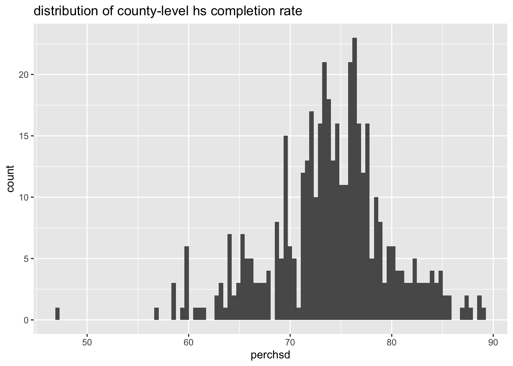
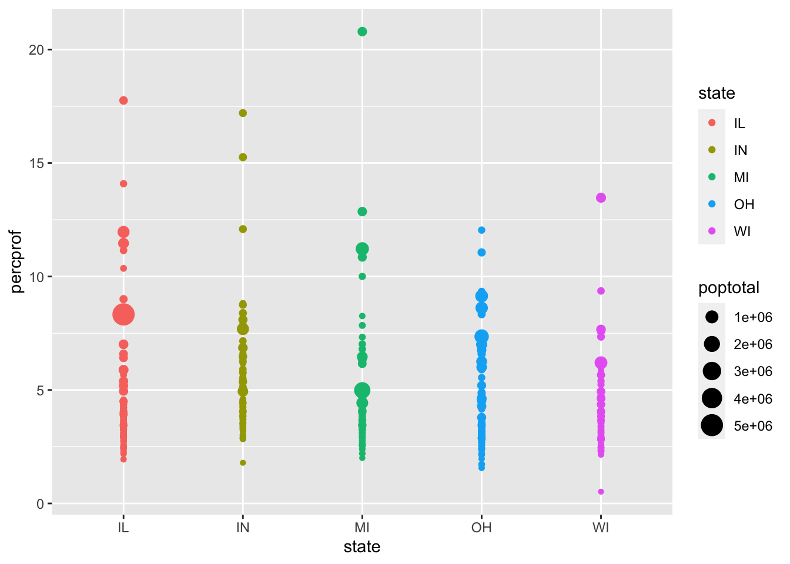
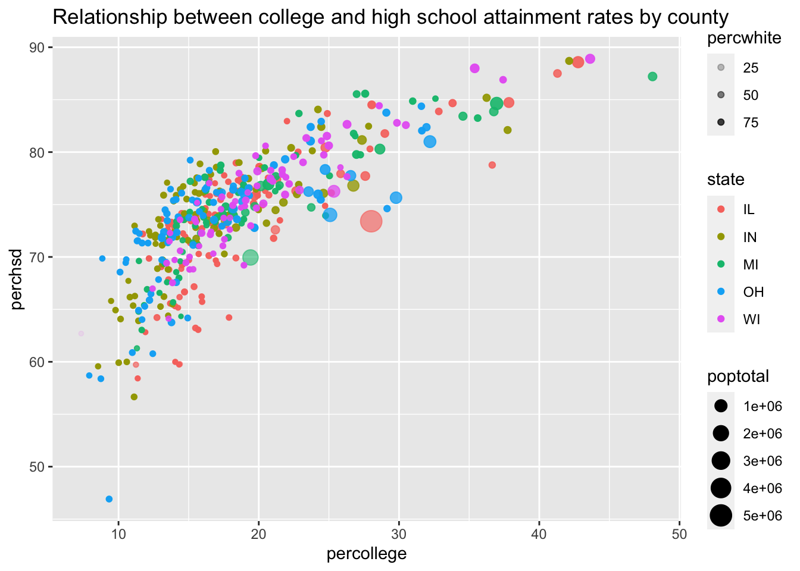

midwest %>%
ggplot(aes(x = percollege,
y = percbelowpoverty,
color = state,
size = poptotal,
alpha = percpovertyknown)) +
geom_point() + facet_wrap(vars(state))
We introduce ggplot package and learn how they can explore and analyze data through more complex visualization.
Jacob Jameson
Download a copy of Module 6 slides
Download data for Module 6 lab and tutorial
In this lab, you will work with midwest.dta.
You will encounter a few functions we did not cover in the lecture video. This will give you some practice on how to use a new function for the first time. You can try following steps:
?new_function in your Console to open up the help pagex or x,y (when two arguments are required)It is highly likely that you will encounter error messages while doing this lab Here are a few steps that might help get you through it.
Recall ggplot works by mapping data to aesthetics and then telling ggplot how to visualize the aesthetic with geoms. Like so:
midwest %>%
ggplot(aes(x = percollege,
y = percbelowpoverty,
color = state,
size = poptotal,
alpha = percpovertyknown)) +
geom_point() + facet_wrap(vars(state))
geomsFor the following, write code to reproduce each plot using midwest



inmetro is numeric, but I want it to behave like a discrete variable so I use x = as.character(inmetro). Use labs(title = "Asian population by metro status") to create the title.
Use geom_boxplot() instead of geom_point() for “Asian population by metro status”
Use geom_jitter() instead of geom_point() for “Asian population by metro status”
Use geom_jitter() and geom_boxplot() at the same time for “Asian population by metro status”. Does order matter?
Histograms are used to visualize distributions. What happens when you change the bins argument? What happens if you leave the bins argument off?
midwest %>%
ggplot(aes(x = perchsd)) +
geom_histogram(bins = 100) +
labs(title = "distribution of county-level hs completion rate")
Remake “distribution of county-level hs completion rate” with geom_density() instead of geom_histogram().
Add a vertical line at the median perchsd using geom_vline. You can calculate the median directly in the ggplot code.
AestheticsFor the following, write code to reproduce each plot using midwest
x, y, color and size
x, y, color and size
color only changes the outline of the bar. Change the aestethic name to fill to get the desired resultgeom_bar that takes a dataset and calculates the count. Read the following code and compare it to the geom_col code above. Describe how geom_bar() is different than geom_colWell done! You’ve learned how to work with R to create some awesome looking visuals!
Want to improve this tutorial? Report any suggestions/bugs/improvements on here! We’re interested in learning from you how we can make this tutorial better.